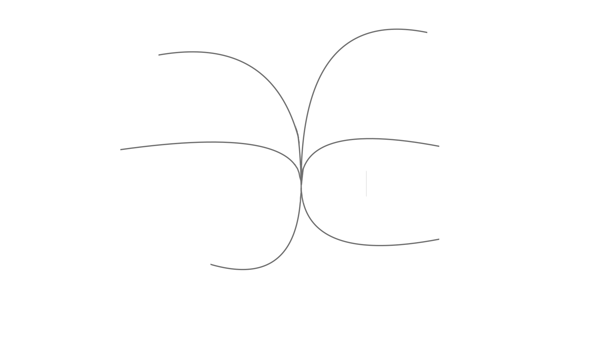

Помощник изучения английского
Этот сайт содержит ссылки на источники, пользуясь которыми можно подтянуть свой англисйкий, попробуйте!
Выберите специальность и нажмите, чтобы увидеть список

Полезные ресурсы:
Курсы
English Live
Memrise
Полезные ресурсы:
Coursera
Memrise
English Central
Полезные ресурсы:
Duolingo
BBC Learning English*
Lingoda
Полезные ресурсы:
TED Talks
Quizlet
English Grammar Online
XYZ school
Hexlet
Полезные ресурсы:
Canva Design School*
Игры для дизайнера
Skillshare
Behance
Полезные ресурсы:
Glossary of Game Development Terms
Udemy
Codecademy
Ministry of Testing
Полезные советы:
• Мотивируйте себя
• Начните с самой распространенной лексики
• Регулярно повторяйте слова
• Пользуйтесь стикерами
• Просматривайте кино на английском
• Практикуйте английский у себя в голове
• Заведите англоязычных друзей
Тетрика
Skyeng
Englex
Яндекс Практикум Английский
Яндекс Практикум Программирование
Полезные ресурсы:
----------------------------------------------------------------------------------------------------------------------------------------------------
Часто используемый сленг программистами, и в целом в сфере IT
Айдишник — id, идентификатор.
Альфа — этап разработки программного обеспечения, на котором разработчики добавляют в программу новые функции, а тестировщики испытывают программу. Это внутренний или непубличный этап.
Баг — от англ. Bug — жучок, клоп. Ошибка в программе.
Бета — бета-версия, приложение на стадии публичного тестирования.
Бот — сокращение от «робот». Ботом называют программу, которая автоматизирует интерфейс. Пример — автоответчик в чате.
Бэкенд — от англ. Back-end. Программно-аппаратная или серверная часть приложения.
Ворнинг — от англ. Warning — предупреждение. Предупреждающее сообщение в интерфейсе.
Гит — система контроля версий Git или сервис GitHub.
Залить — загрузить. Например, «залить файлы на сервер».
Итерация — повторение, версия. «Мы сделали несколько итераций» — мы повторили шаг несколько раз.
Костыль — код, который нужен, чтобы исправить несовершенство ранее написанного кода.
Легаси — от англ. Legacy. Устаревший код, который не обновляется, но используется. Или код, который разработчик получил от предыдущих разработчиков.
Локалка — локальный. Например, локальный сервер или сеть.
Ридми — файл Readme, в котором содержится информация о программе.
Свитчнуть, свичнуть — переключить. От английского switch.
Софт — от англ. Software — программное обеспечение.
Тимлид — от английского Team Lead — руководитель команды. Координатор группы программистов.
Фидбек — от англ. Feedback — обратная связь.
Фиксить, пофиксить — от англ. Fix. Чинить, починить, исправить.
Фича — функция, возможность. От англ. Feature.
Фреймворк — от англ. Framework — каркас. Инструмент разработки, набор типовых шаблонных решений, упрощающих работу программиста.
Фронтенд — от англ. Front-end — клиентская часть приложения.
Юзать — от английского To use — использовать.
Ява — язык программирования Java.